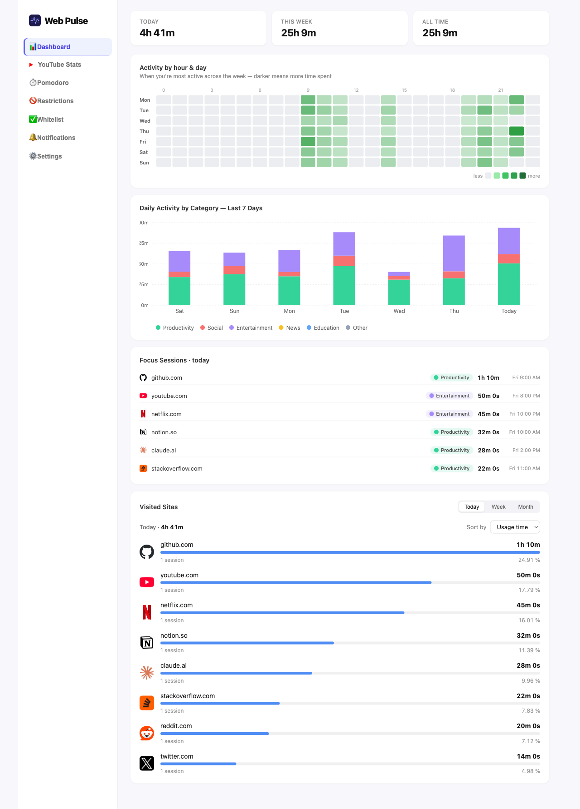
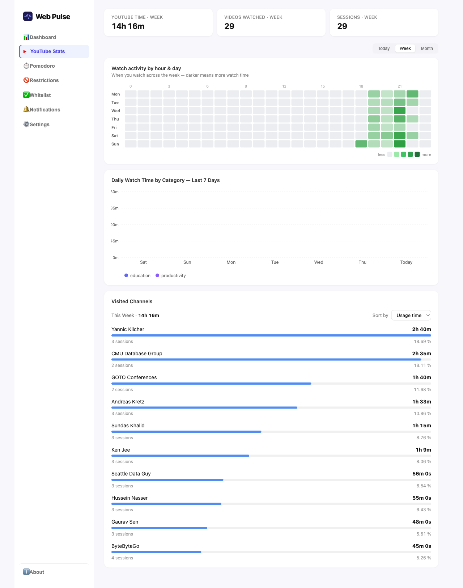
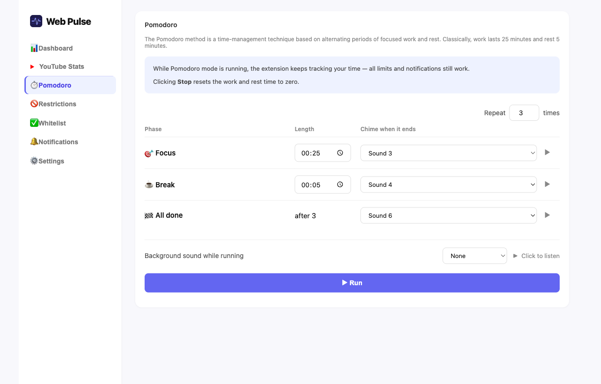
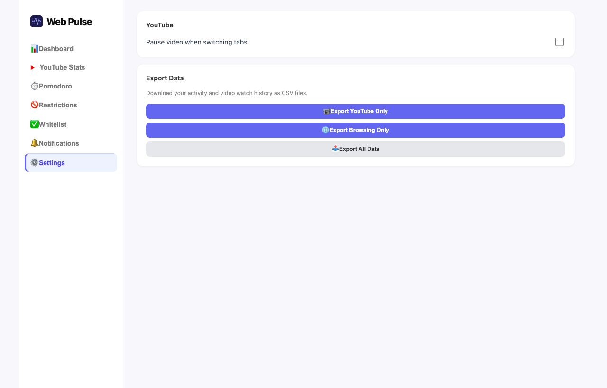
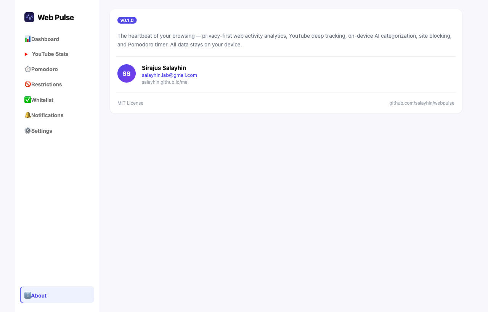
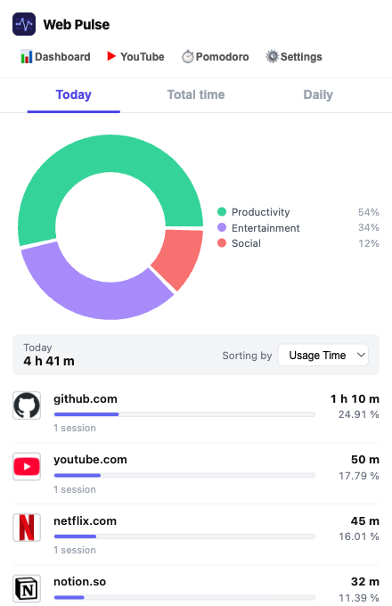
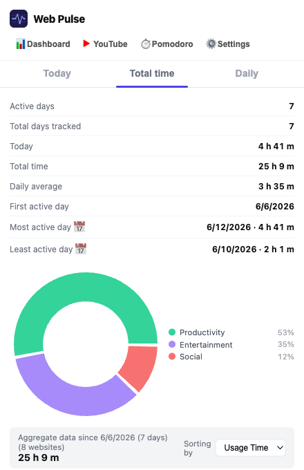
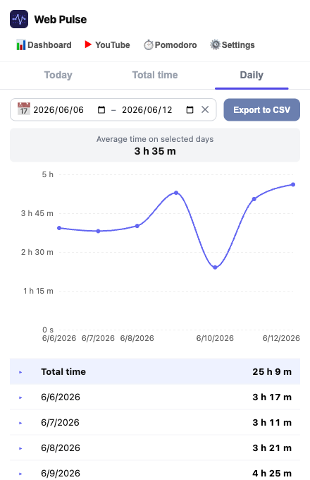
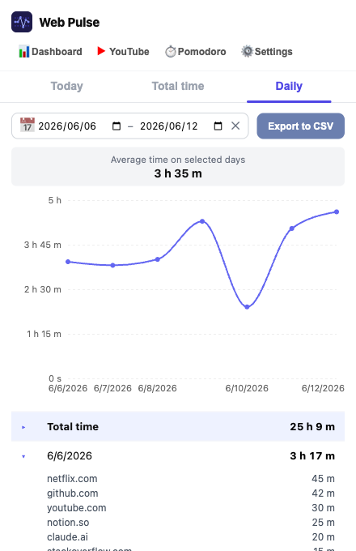

WebPulse tracks where your time goes online — deep YouTube analytics, Shorts blocking, AI categorization, site blocking, and a Pomodoro timer. All data stays on your device.
Overview, YouTube analytics, Pomodoro, restrictions and settings — all in one tab.





Click the extension icon for a quick breakdown — Today, lifetime totals, or a date-range daily view.




WebPulse goes beyond simple time tracking — it understands context.
Tracks active tab time with idle detection. Heartbeat-based sessions survive Chrome killing the service worker.
Per-channel and per-video watch time. Counts actual playback seconds at any speed — not just time on the tab.
Removes Shorts from feed, sidebar, search and channel tabs. Redirects youtube.com/shorts back to the homepage.
Automatically pauses YouTube videos when you switch to another tab. No more audio playing in the background.
Classifies every site using a static rule map first, then Gemini Nano for unknowns. Never leaves your device.
Configurable work/rest intervals with audible tick-tock, chimes, and ambient ocean or rain sounds.
Set daily time limits per domain. Hit your limit and get redirected. One daily defer for when you really need it.
Heatmaps, stacked category charts, focus session detection, and ranked site lists — all in one page.
Export your browsing history or YouTube watch sessions to CSV for analysis in any tool you like.
Daily summary at your chosen time. Per-site alerts when you exceed a custom threshold.
No servers, no telemetry, no accounts. All data lives in your browser's IndexedDB. Export or delete anytime.
No signup, no cloud. Install, browse, and your data is already there.
Clone the repo, run npm run build, and load the dist/ folder as an unpacked extension in Chrome. Takes about two minutes.
The background service worker silently tracks active tab time. No interaction needed — data accumulates automatically.
Click the WebPulse icon for a quick overview, or open the full dashboard for deep charts, YouTube stats, and settings.
Block distracting sites, set a Pomodoro schedule, configure notifications — or just observe and learn your patterns.
Modern Chrome MV3 extension with React, TypeScript, and on-device AI.